까다롭게 고르고, 정직하게 담다
"내 아이에게 진짜 좋은 것만 먹이고 싶다."
그 평범하지만 간절한 물음이
파머스테일의 시작이었습니다.
우리는 공장을 돌리기 위해
원물을 대량으로 떼오지 않습니다.
전국을 돌며 우리가 납득할 수 있는
국내산 원물만을 — 한 점, 한 점 — 직접 선별합니다.
대량 생산하여 창고에 쌓아두지 않습니다.
필요한 만큼만, 가장 신선한 상태로 보냅니다.
Farmer's Tail
"내 아이에게 진짜 좋은 것만 먹이고 싶다."
그 평범하지만 간절한 물음이
파머스테일의 시작이었습니다.
우리는 공장을 돌리기 위해
원물을 대량으로 떼오지 않습니다.
전국을 돌며 우리가 납득할 수 있는
국내산 원물만을 — 한 점, 한 점 — 직접 선별합니다.
대량 생산하여 창고에 쌓아두지 않습니다.
필요한 만큼만, 가장 신선한 상태로 보냅니다.
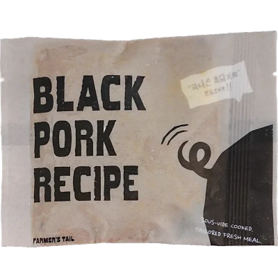

체중부터 활동량, 기호까지 고려한 맞춤 화식
QR 스캔하고 우리 아이 맞춤 식단을 확인해 보세요
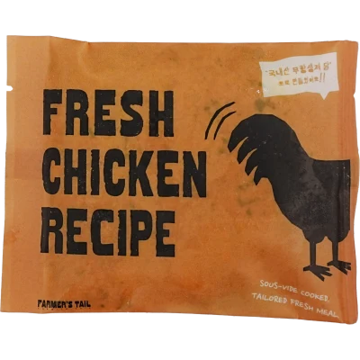
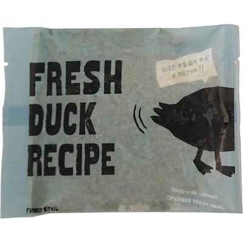

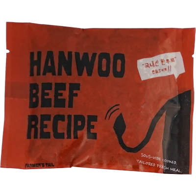


각기 다른 장점을 담은
4가지 영양 화식을 만나보세요.


완벽한 영양 밸런스를 담은
호불호 없는 닭고기 데일리 밀

기력 회복과 면역력을 동시에 채우는
프리미엄 한우 보양식

활기찬 하루와 튼튼한 근육을 책임지는
고단백 흑돼지 화식

알러지 걱정 없이 피부가 편안해지는
저알러지 오리 식단


저온 수비드로 촉촉한 육즙을 꽉 채운
100% 국내산 리얼 화식
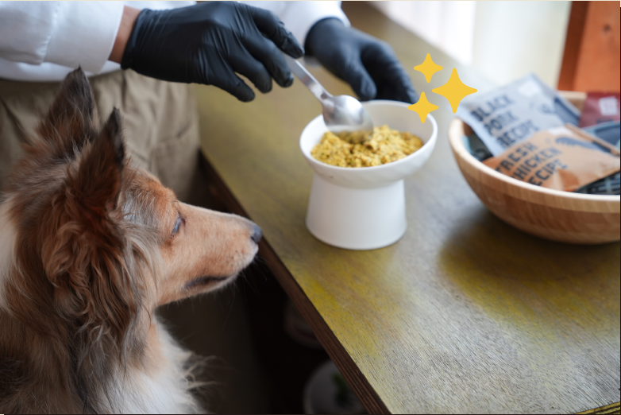
잘 먹는 건 기본입니다
파머스 레시피 절대 타협하지
않는 5가지 특징!

100% 국내산 원물휴먼그레이드

자연 그대로6無 첨가

저온 수비드조리공법

100% 자체 제조유통 마진 삭제
식약처 등록 프리믹스와
오메가 3&6 배합은 물론글로벌 3대 기준
100% 충족

육즙은 꽉 채우고 영양 손실은
최소화한 저온 수비드냉동 보관하다간편하게 쑥!
하루 전 냉장 해동 후밥그릇에 툭!
간편 영양식
완성!
우리 아이들의 기호와 영양을 위한
100% 국내산 휴먼그레이드 원재료

100% human grade
사람이 먹을 수 없는 건 절대 넣지 않아요

좋은 원물에서 시작한
4가지 특별한 레시피

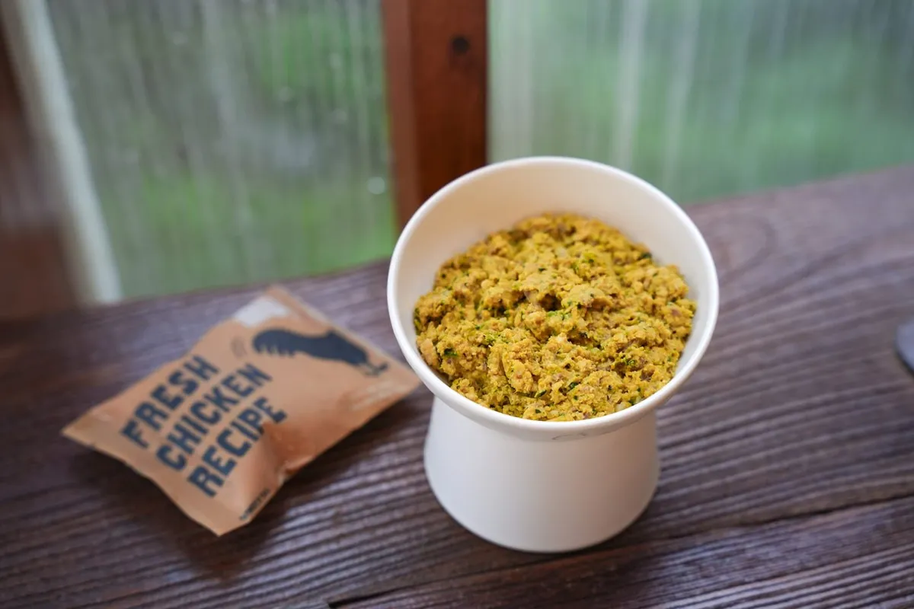
국내산 무항생제 닭을 담아
매일 편안하게 즐길 수 있도록
만들었어요.

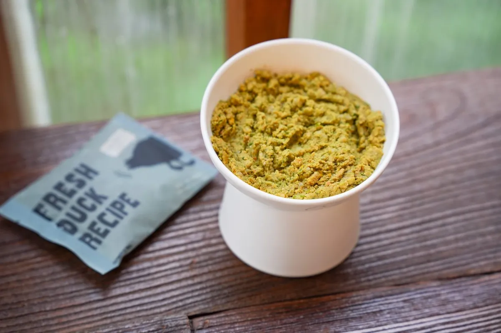
국내산 무항생제 오리를 담아
입맛 까다로운 아이도
맛있게 즐길 수 있어요.

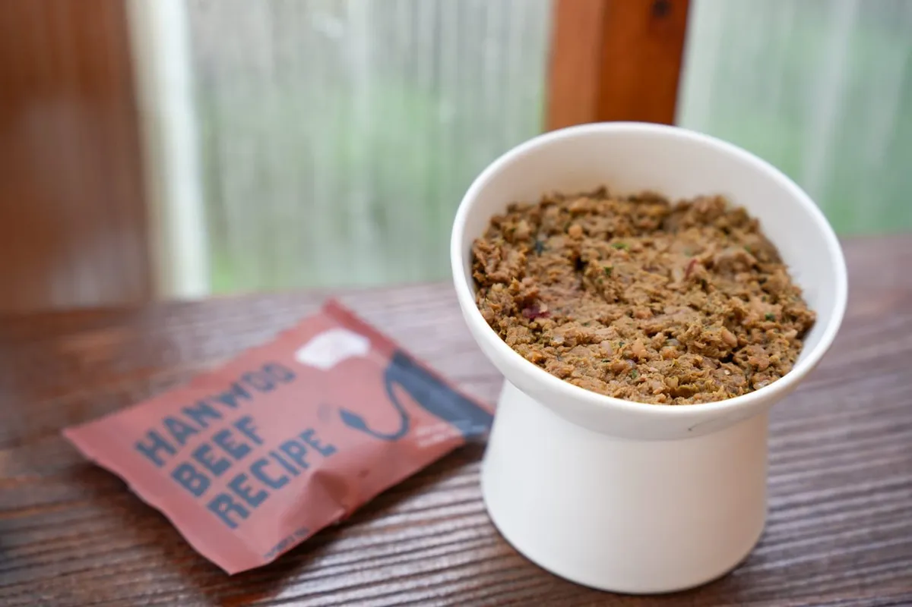
국내산 한우의 풍부한 맛과
영양을 담아 활력 있는
하루를 채워줘요.

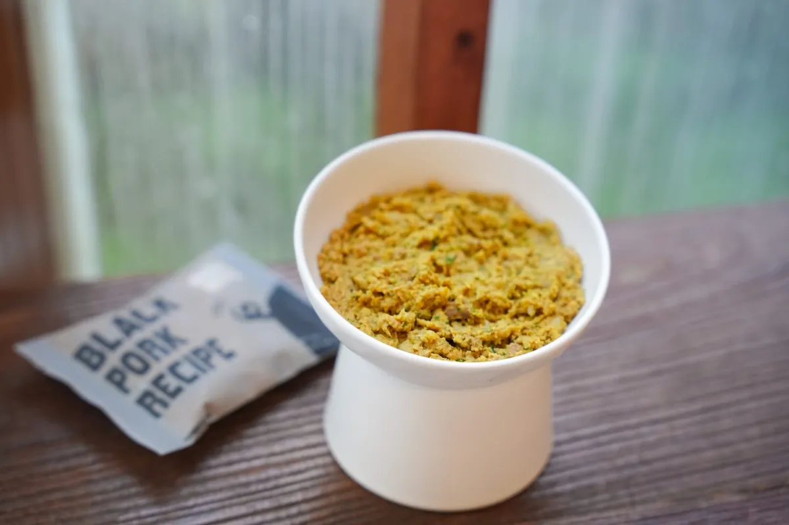
국내산 흑돼지를 담아
튼튼한 몸을 위한
영양을 더했어요.
한 끼의 마지막 퍼즐
파머스테일 뉴트리 - 코어
좋은 원물에 더하는 마지막 영양까지 깐깐하게.
식약처 식품원료로 등재된 성분을 사용한 프리믹스로
화식만으로 부족하기 쉬운 비타민과 미네랄을
꼼꼼하게 채웠습니다.
FARMER'S TAIL NUTRITION PREMIX

식약처 등록 프리믹스와
오메가 3&6 배합은 물론
글로벌 3대 기준 100% 충족
파머스테일 뉴트리-코어 식약처 등록
품목보고번호 - 2009036023152

* 식품안전나라(식약처)에서 등록 사항을 확인하실 수 있습니다
파머스테일 뉴트리 - 코어
성분정보

프리믹스로 부족하기 쉬운 영양까지 채운,
더 균형 잡힌 한 끼.
안심하고 급여하세요!
원물 검수부터 조리·배합·급속냉동까지
정해진 공정을 거쳐 국내에서 생산합니다.


불필요한 인공첨가물 없이
원물 그대로의 한 끼
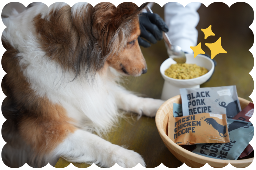
반려견에게 유해할 수 있는
각종 첨가물과 부산물은 절대 넣지 않았습니다.
 글루텐FREE
글루텐FREE 화학 보존제FREE
화학 보존제FREE 부산물FREE
부산물FREE 인공색소FREE
인공색소FREE 배앓이 유당 성분FREE
배앓이 유당 성분FREE 육분FREE
육분FREE
 원물 검수 & 세척
원물 검수 & 세척 저온 수비드
저온 수비드 믹싱
믹싱 영양 배합
영양 배합 급속 냉동
급속 냉동 영양화식 완성
영양화식 완성파머스테일
화식 급여 꿀팁충분히 해동한 뒤 살짝 미지근하게 급여하면
원물의 향을 더욱 맛있게 즐길 수 있어요!
기존에 먹던 사료에 화식을 조금씩 섞어
천천히 급여 비율을 늘려주세요!
화식에 미지근한 물을 조금 더해
더 부드럽고 편하게 급여해주세요!
Calorie Info
(100g 기준)
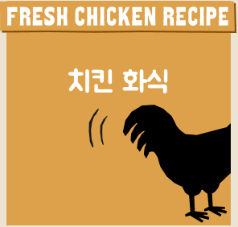
125 kcal
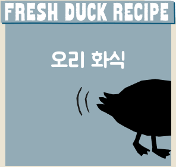
130 kcal
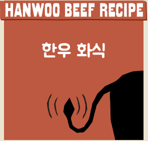
145 kcal
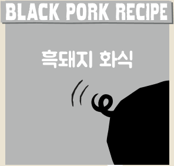
125 kcal
국내산 재료를 가득 품은 파머스 레시피
수분과 영양은 듬뿍 채우고, 칼로리는
100g당 평균 약 131 kcal로 쏙 뺐습니다.
칼로리 안심하고 급여하세요!
 체중과 활동량, 급여 목적에 따라 필요한 양이 달라요. QR을 스캔해 우리 아이에게 맞는 급여량을 확인해 보세요.
체중과 활동량, 급여 목적에 따라 필요한 양이 달라요. QR을 스캔해 우리 아이에게 맞는 급여량을 확인해 보세요.
| 등록성분량 | |
|---|---|
| 성분명 | 성분량 |
| 조단백질 | 13.9%이상 |
| 조지방 | 5.5%이하 |
| 조섬유 | 0.3%이하 |
| 조회분 | 2.1%이하 |
| 수분 | 75.1%이하 |
| 칼슘 | 0.3%이상 |
| 인 | 0.3%이상 |
| 등록성분량 | |
|---|---|
| 성분명 | 성분량 |
| 조단백질 | 15.1%이상 |
| 조지방 | 4.7%이하 |
| 조섬유 | 0.3%이하 |
| 조회분 | 2.2%이하 |
| 수분 | 75.2%이하 |
| 칼슘 | 0.3%이상 |
| 인 | 0.3%이상 |
| 등록성분량 | |
|---|---|
| 성분명 | 성분량 |
| 조단백질 | 14.9%이상 |
| 조지방 | 5.4%이하 |
| 조섬유 | 0.2%이하 |
| 조회분 | 2.1%이하 |
| 수분 | 76.1%이하 |
| 칼슘 | 0.3%이상 |
| 인 | 0.3%이상 |
| 등록성분량 | |
|---|---|
| 성분명 | 성분량 |
| 조단백질 | 13.1%이상 |
| 조지방 | 5.2%이하 |
| 조섬유 | 0.3%이하 |
| 조회분 | 2.1%이하 |
| 수분 | 76.3%이하 |
| 칼슘 | 0.3%이상 |
| 인 | 0.3%이상 |